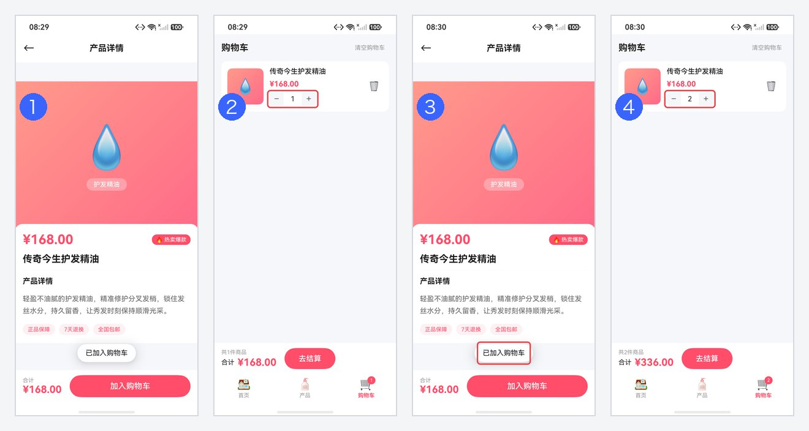
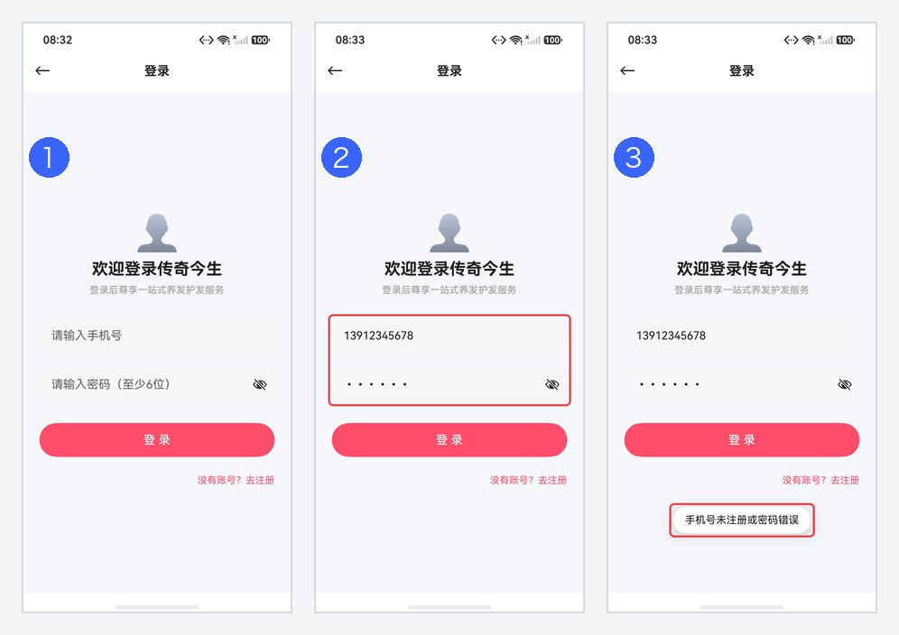
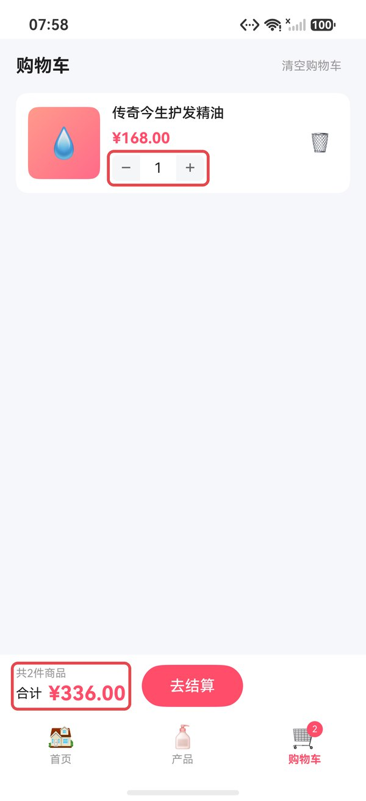
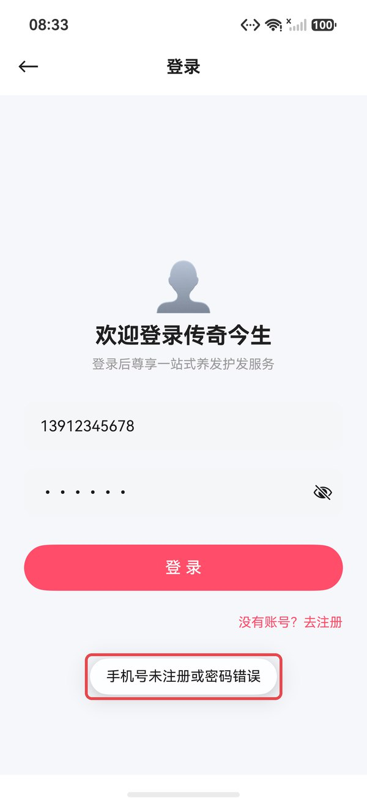
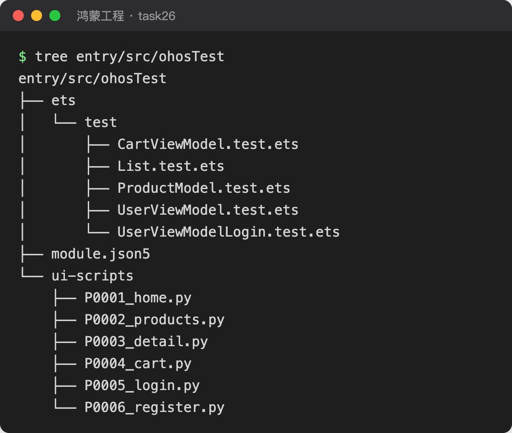
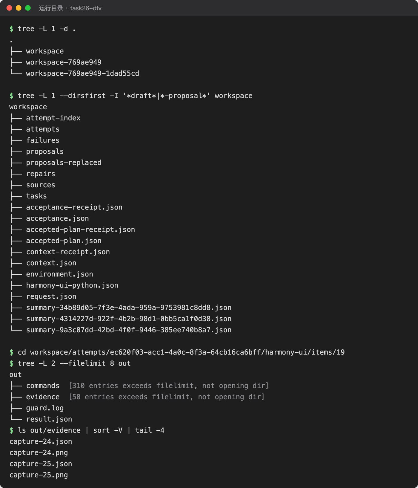

鸿蒙白盒验证器
鸿蒙白盒验证器（dt-verify）在 DSH 里按需求文档验证鸿蒙应用。它读取需求和工程源码，为每条需求编写 Harmony 单元测试和界面测试，写进工程的测试目录，在真机或模拟器上执行，然后逐条给出“满足、违反、未验证”的结论和证据。你允许修复时，它按失败修改生产代码，再用同一套测试全量复测，直到没有可以修复的失败为止。
叫“白盒”，是因为它看得到代码：从源码找到页面、控件和状态，单元测试直接调用 ViewModel 核对内部结果，界面测试按源码里的文字和结构定位控件。只在界面上点一遍、看不到内部状态时容易漏掉的问题，也能测出来。
只用于鸿蒙 Stage 工程，当前为预览版。
有什么用#
| 能力 | 说明 |
|---|---|
| 每条需求都有结论 | 需求拆成带原文行号的验收要求，每条给出满足、违反或未验证，并附上截图、控件树和日志的位置 |
| 测试写进工程 | 单元测试写在 entry/src/ohosTest/ets/test，界面测试写在 entry/src/ohosTest/ui-scripts，可以随代码提交，以后再跑 |
| 先审计划，再执行 | 写好的测试由没有参与编写的审查者逐条接受或拒绝，接受的用例冻结以后才上设备执行 |
| 发现问题后修复 | 只改生产代码，不改测试；修复后用同一套测试全量复测，最多 5 轮 |
| 结论可以回查 | 每次执行单独留档，汇总时再按原始证据复核；执行受阻或证据不够的要求记为未验证，不算通过 |
验证原理#
一次完整的“验证并修复”按下面的流程进行。第 5 到第 8 步是修复循环，每一轮都在新的运行目录里复测，前一轮的证据保留不动。
它能测出问题，靠的是下面几种做法。例子都来自下文的电商应用。
| 做法 | 能测出什么 | 例子 |
|---|---|---|
| 每条用例绑定到需求原文 | 漏做或做错的功能 | 需求要求“登录时核对注册的凭据”，用例用未注册的手机号登录，应用却登录成功 |
| 状态刷新单独成类 | 页面已经打开时数据变化，页面还显示旧值；重新进入页面才正确的问题 | 购物车页开着时再加一次同一商品，条目数量仍是 1，底部合计已经是 2 件 |
| 单元测试直接调用业务代码 | 界面上不容易触发的逻辑分支 | 直接调用 UserViewModel.login，未注册账号应返回 false |
| 修复时不能改测试 | 为了通过而放宽断言、改测试 | 测试本身有问题时提出申诉，重新审查通过后才换用修订的用例 |
| 每轮全量复测 | 修好一处、改坏另一处 | 修好登录后，一条“不注册直接登录成功”的旧单元测试失败，被识别为测试问题并修订 |
什么时候用#
| 场景 | 得到什么 |
|---|---|
| Android 应用迁移到鸿蒙以后的验收 | 按需求文档逐条核对迁移结果，不通过的功能直接修复，并留下可以重跑的测试 |
| 功能开发完成后的自测和回归 | 改动以后按需求回归，确认没有把已有功能改坏 |
| 交付前核对 | 一份按需求逐条列出结论和证据的验收结果，可以直接交给评审 |
没有需求文档、不是鸿蒙 Stage 工程，或者主要功能依赖相机、华为账号这类模拟器不具备的能力时，用处不大。
用上后的收益#
在 9 个迁移到鸿蒙的应用上运行“验证并修复”，人工验收功能点的通过率从 81.8% 提高到 86.1%：
| 项 | 结果 |
|---|---|
| 应用 | 9 个，每个 9–35 个验收功能点，共 187 个 |
| 修复前（人工验收） | 153 / 187 通过（81.8%） |
| 验证器修复后 | 161 / 187 通过（86.1%），新增的 8 个都在设备上逐项确认 |
| 新增通过的来源 | 3 个由验证器自己测出并修好；另外 5 个没有单独测出，是被它对其他失败的修复一起修好的 |
| 需求覆盖 | 212 条功能需求中，151 条（71.2%）至少有一项要求得出满足或违反的结论 |
| 用时 | 每个应用 18–124 分钟，平均 72 分钟 |
数据来自 0.1.0-dev.28 在 DevEco 上的批量运行，模型为 deepseek-flash，设备为 nova 16 模拟器。修复前的结果取自同一批应用的人工验收表。没有测出的点主要是模拟器缺少的能力（相机、账号）、没有可观察的界面（Canvas 绘制、系统分享）和显示问题。
只做界面测试修复或单元测试修复。在两个规模更大的迁移应用上，单独用界面测试或单元测试验证并修复，再按功能清单逐条对照修复前后：
| 方式 | 应用 | 功能清单 | 修复后变为可用 |
|---|---|---|---|
| 界面测试修复 | Cofi | 335 个功能点 | 34 个（10.1%）：不可用变可用 31 个，部分可用变可用 3 个 |
| 界面测试修复 | AntennaPod | 599 个功能点 | 直接修复 36 个（6.0%）；算上入口恢复后能进入的功能，共 167 个（27.9%） |
| 单元测试修复 | AntennaPod | 599 个功能点 | 37 个（6.2%）：不可用变可用 7 个，部分可用变可用 30 个 |
这两组数据来自 ArkTs-Core 中的 arkts-ui-verifier 和 arkts-ut-verifier，与本插件的界面测试、单元测试部分做法相同：按需求写测试，上设备执行，只改生产代码修复。可用性按功能清单对照修复前后的代码判定，界面测试那组没有逐项装机复核。
例子#
“传奇今生”是一个从 Android 迁移来的电商应用，需求文档有 15 条功能需求。人工验收时 3 个功能点没有通过：登录不核对账号（F8）、购物车不能加减数量（F12）、重复加入购物车后数量不变（F14）。
对它运行一次“验证并修复”，用时约 90 分钟，修复 2 轮后结束：
| 项 | 修复前 | 修复后 |
|---|---|---|
| 人工验收功能点 | 12 / 15 通过 | 15 / 15 通过，F8、F12、F14 在模拟器上逐项确认 |
| 界面测试（33 条） | 通过 27，失败 3，受阻 3 | 通过 30，受阻 3 |
| 单元测试（6 条） | 通过 5，失败 1 | 受阻 6（见下方说明） |
| 验收要求（41 项） | — | 满足 24，违反 0，未验证 17 |
| 生产代码 | — | 3 个文件，+26 / −10 行 |
第 2 轮复测时，工程里还留着一条已被替换的旧单元测试，插件因此判定整份单元测试证据无效，6 条单元测试都记为受阻，对应要求记为未验证。界面测试的结论不受影响。
核心测试用例
F14：购物车页开着时再次加购。需求要求“同一商品重复添加时数量累加，购物车列表实时反映添加操作”。验证器把它归为状态刷新类，生成的界面测试先打开购物车页，再回到产品页加购同一商品，最后回到购物车断言数量变成 2：
def test_repeat_add_updates_open_cart_quantity():
launch()
nav_product_detail()
ui.click(BY.text("加入购物车"))
# …（省略等待与前置检查）
nav_cart()
cap = ui.capture()
old = field_below_name(cap, "传奇今生护发精油", "1")
ui.require(len(old) == 1, "前置：该条目数量应为 1")
ui.click(BY.text("产品"), click_target="nearest-clickable-ancestor")
# …
ui.click(BY.text("加入购物车"))
# …
ui.click(BY.text("购物车"), click_target="nearest-clickable-ancestor")
# …
quantities = field_below_name(cap, "传奇今生护发精油", "2")
assert len(quantities) == 1, "购物车已打开后再次添加，该条目数量应刷新为 2，实际条目内匹配 %d 个" % len(quantities)
- 第一次加入购物车
- 打开购物车页，数量为 1
- 回到产品页，再加一次同一商品
- 回到购物车，数量变成 2，用例通过
F8：未注册的手机号不能登录。需求要求注册时建立的凭据在登录时被核对。界面测试和单元测试各写一条：
def test_login_rejects_unregistered_account():
launch()
nav_login()
fill_login("13912345678", "abc123")
ui.click(BY.text("登 录"))
cap = wait_for(BY.text("传奇今生"), rounds=4)
assert len(ui.find(cap, BY.text("欢迎登录传奇今生"))) == 1, "未注册手机号登录应被拒绝，仍停留在登录页"
assert len(ui.find(cap, BY.text("传奇今生"))) == 0, "未注册手机号不应进入已登录状态（不应出现首页品牌标题）"const unregistered: UserViewModel = new UserViewModel();
expect(unregistered.login('13912345678', 'abc123')).assertFalse();
expect(unregistered.isLoggedIn).assertFalse();
expect(unregistered.phone).assertEqual('');
- 打开登录页
- 输入未注册的手机号和密码
- 点击登录后停留在登录页，提示“手机号未注册或密码错误”，用例通过
修复前后对比
下面每组截图是同一条用例在两次执行中的最后一张证据截图：修复前取自首次执行，修复后取自修复后的复测。红框为标注。


修复只改了 3 个生产文件。F14 的原因是购物车列表 ForEach 的键只用商品 id，数量变了键不变，这一行不会重新渲染；键里加上数量后，F12 的加减数量也一起修好了：
- }, (item: CartItem) => item.product.id.toString())
+ }, (item: CartItem) => item.product.id.toString() + '_' + item.quantity.toString())F8 的修复在 UserViewModel.login 里按手机号查找已注册用户并核对密码，不匹配时返回 false；登录页收到失败后提示“手机号未注册或密码错误”，不再跳转。
生成的测试和运行目录
测试写在工程里，6 个界面测试脚本按页面划分，5 个单元测试文件按功能组划分：

运行目录记录整个过程。修复循环每轮派生一个新运行，workspace 是首次运行，后面两个是两轮修复后的复测：

| 文件或目录 | 内容 |
|---|---|
sources/、request.json | 冻结的需求文档快照和本次运行的请求 |
acceptance.json | 验收要求，每条带需求原文行号和类型 |
proposals/、accepted-plan.json | 各插件提交的测试计划，以及审查后冻结的正式计划 |
attempts/<执行 ID>/ | 一次执行：result.json 是每条用例的状态；界面用例的 out/evidence 是每一步的截图和控件树，out/commands 是每条设备命令的输出 |
failures/、repairs/ | 失败包和修复记录 |
summary-*.json | 每条要求的结论；最后一轮运行里的 chain-summary-*.json 是整次运行的最终交付 |
使用前准备#
| 项 | 要求 |
|---|---|
| DSH | ^0.2.1-rc.2 |
| 工程 | 鸿蒙 Stage 工程根目录：有 build-profile.json5，至少一个模块有 src/main/module.json5 |
| 需求文档 | 文本格式的需求说明，例如 spec/spec.md；可以另给 Android 工程作为行为参照 |
| 鸿蒙工具链 | DevEco Studio 自带的 SDK、hvigor、ohpm 和 hdc |
| 设备 | 一台真机或模拟器，hdc list targets 能看到 |
| Node.js | 22.22 或更高 |
| Python | 3.11 或更高，界面测试使用，需要能导入 hypium 6.1.0.210 和 xdevice；启动 DSH 前把 DT_VERIFY_PYTHON 设为这个解释器的绝对路径 |
安装#
下面的录屏是在 DSH 网页版里从安装到发起验证的完整操作，验证的是上面例子里的“传奇今生”。
桌面版：打开「插件」→「发现」，在 Fuxi DSH 插件市场中找到“鸿蒙白盒验证器”，点击安装。还没有「发现」时，先在「实验性插件」旁的「更多」中启用「自定义插件市场」，再添加索引源：
https://fuxi-ailabs.github.io/dsh-plugin-market/index.json命令行：先退出 DSH，再执行
dsh plugin --profile web add @fuxi-ailabs/dsh-dt-verifyweb 换成你使用的 profile。安装后插件注册 dt-verify Skill 和几个名称以“DT 子任务”开头的子 Agent 角色。这些角色只用于委派，不要用它们新建会话。
使用#
- 在 DSH 中把鸿蒙工程根目录作为工作区打开，确认设备在线。
- 在输入框输入
/dt-verify选中 Skill，再写上要验证的工程和需求文档，发送。路径和设备换成你自己的；只想验证、不改代码时，把“并修复发现的问题”改成“只验证，不修改生产代码”。
/dt-verify 验证当前鸿蒙工程并修复发现的问题。需求文档是 spec/spec.md，设备只用 127.0.0.1:5557。中途不用问我，跑完后告诉我运行目录、每条需求的结论、修复了什么和证据位置。- 验证器依次整理验收项、派子 Agent 编写测试、审查计划、上设备执行；有失败时生成失败包，修复后在新的运行里全量复测。整个过程不需要确认。上面的电商应用用时约 90 分钟。
- 结束后，回复里给出运行目录、链式汇总的路径、每条需求的结论和修复的改动。按下一节读结果。
读懂结果#
测试跑没跑成，和需求有没有被满足，是两个问题。汇总按验收要求分别给出：
| 用例状态 | 含义 |
|---|---|
PASS | 按计划执行，结果符合预期 |
FAIL | 执行了，结果与预期不符 |
BLOCKED | 缺少环境、设备或前置条件，或证据复核没有通过，没有得到有效结果 |
| 要求结论 | 含义 |
|---|---|
SATISFIED（满足） | 有充分证据表明要求被满足 |
VIOLATED（违反） | 有效证据表明要求被违反 |
UNVERIFIED（未验证） | 证据不足、执行受阻，或没有可观察的界面；不会被其他要求的通过补齐 |
限制#
| 情况 | 结果 |
|---|---|
| 相机、华为账号、通知和振动状态等模拟器不具备或读不到的能力 | 记为未验证 |
| Canvas 绘制，以及没有文字和 id 的图片、开关等定位不到的控件 | 记为未验证 |
| 显示问题，例如字形显示错误、颜色细节 | 用例按文字定位，看不到这类问题，可能判为通过 |
| 运行时间 | 一个应用通常要 20–120 分钟，期间独占一台设备；同一个应用不要在同一台设备上同时跑两次 |
| 修复会改生产代码 | 建议在单独的分支上运行，结束后检查改动再合入 |